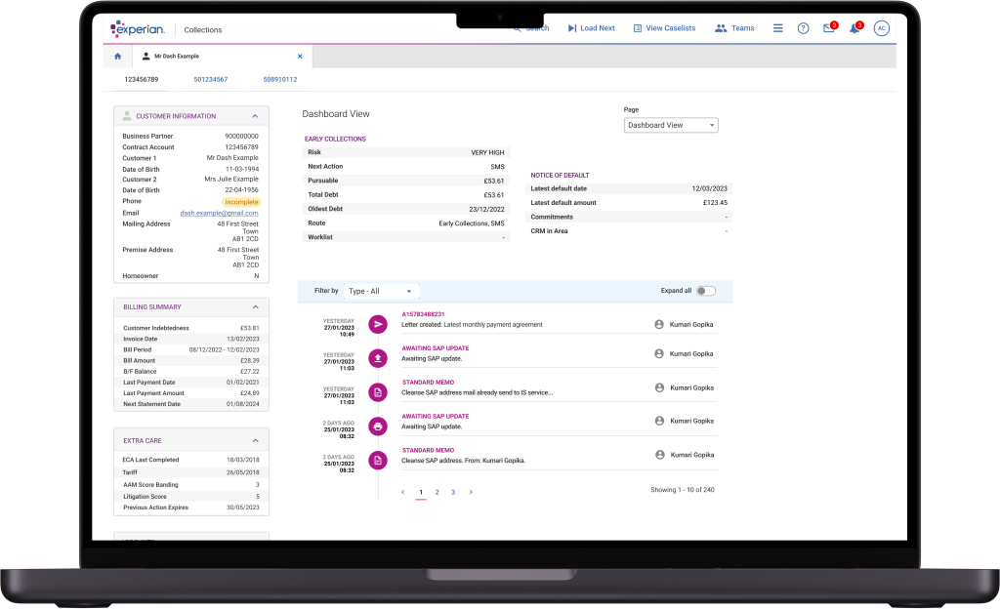
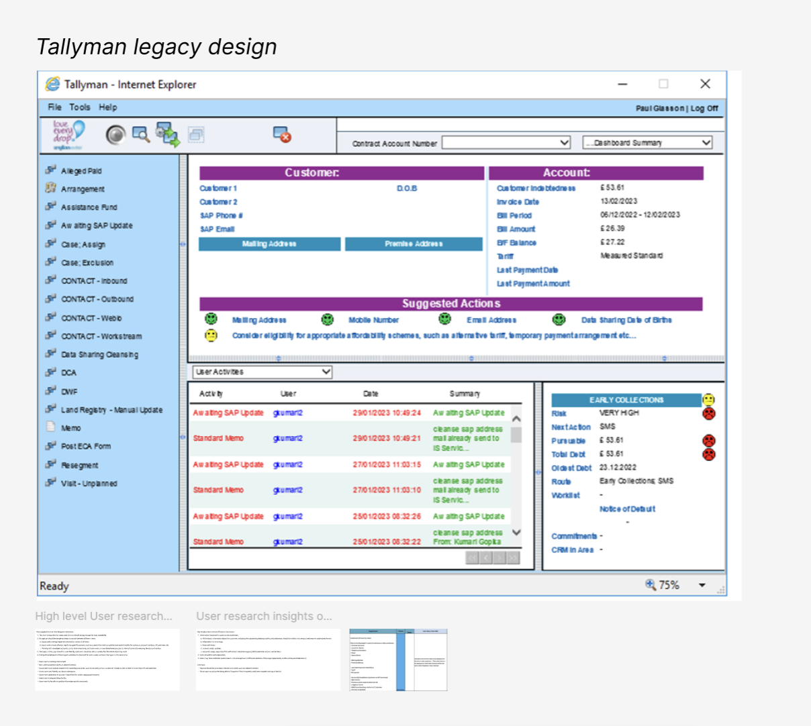
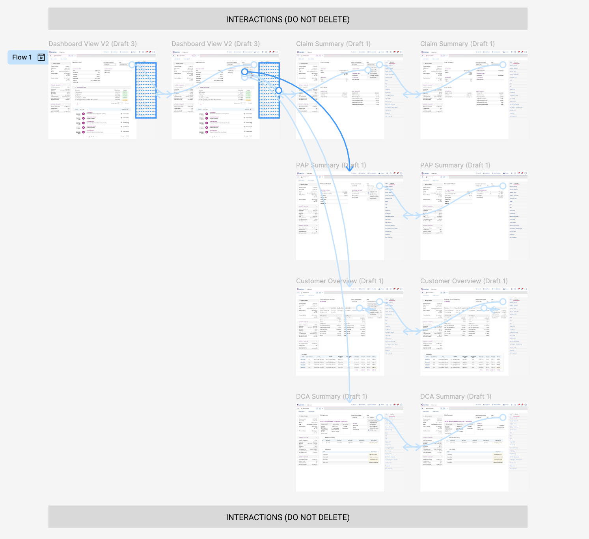
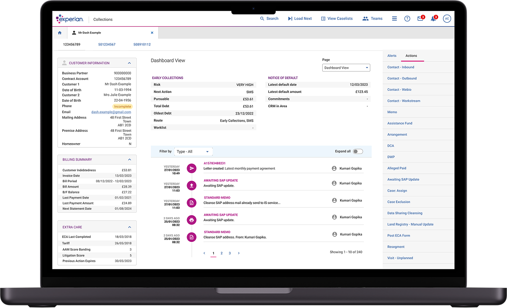

2023 | ANGLIAN WATER
Modernising a payment tracking platform
Year: 2023 | Duration: 1 month | Role: UX Design Lead
Overview
Anglian Water needed a modernised internal customer relationship management (CRM) system to monitor customer payments, streamline workflows, and improve data accuracy.
As the lead UX designer, I guided the design, and prototyping process to create a more intuitive and scalable solution for their internal teams.
Problem
The legacy CRM system was inefficient, leading to slow task completion, data entry errors, and frustration among users.
The interface was outdated, lacked consistency, and required excessive navigation, increasing cognitive load. Agents struggled to complete routine processes quickly, affecting productivity.
Solution
We designed a high-fidelity prototype that restructured workflows, improved information hierarchy, and enhanced usability.
By leveraging Experian’s design system, we ensured scalability and consistency across the system. The redesigned interface minimised cognitive load, reduced errors, and optimised task efficiency.
Process
- User research: Conducted interviews and observations with CRM agents to understand pain points and inefficiencies.
- Wireframing & prototyping: Developed low-fidelity wireframes and iterated based on feedback before moving to high-fidelity designs.
- User testing: Conducted usability testing with agents to refine interactions, ensuring accessibility and ease of use.
- Development: Worked closely with developers to implement the new system.
Results
- Optimised workflows, reducing task completion time and improving data accuracy.
- Increased efficiency, allowing agents to complete key tasks with fewer clicks.
- Secured leadership approval, ensuring buy-in for system implementation.
- Seamless developer handover, enabling a smooth transition from prototype to build.
"You delivered on the brief, and my team and I are really impressed with the prototypes, along with your considerations for the build now and in the future." - Anglian Water
Conclusion
The redesigned CRM system addressed critical usability issues, improved data handling, and enhanced the user experience for internal teams.
By focusing on efficiency, accessibility, and intuitive navigation, we created a system that better supported Anglian Water’s operational needs.
